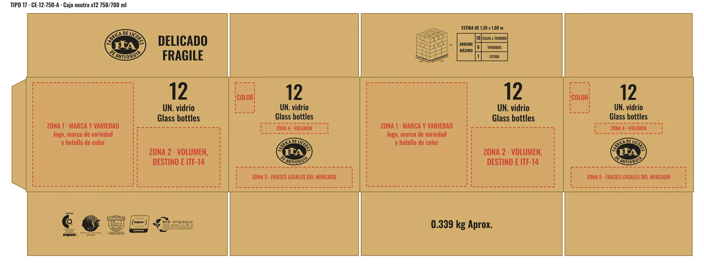
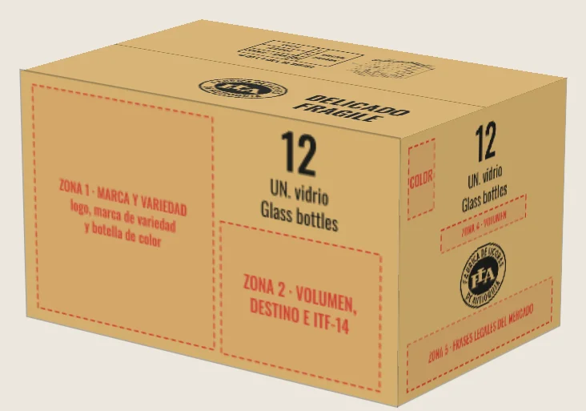

Piloto · Caja neutra x12 750/700 ml
TIPO 17, aguardiente de exportación: 11 referencias activas pasan a una sola caja. El proveedor imprime solo lo fijo en una tinta y la planta rotula marca, variedad, volumen, destino, frases legales e ITF-14. Código provisional: CE-12-750 (por asignar en el maestro de materiales).
1. La caja que entrega el proveedor
Misma estructura de hoy (RSC, cartón C620KF kraft, sin cierre licorera). Lleva una sola tinta, Negro 90, con lo que es igual en las 11 referencias. Las zonas en rojo punteado quedan sin impresión: ahí rotula la planta.


Versión A: medidas actuales, sin cambio estructural. Se puede pedir de inmediato.
| Imprime el proveedor (Negro 90) | Dónde | Comentario |
|---|---|---|
| Sello Fábrica de Licores de Antioquia | Tapa (aleta 1) y caras 2 y 4 | Igual en todas las referencias |
| DELICADO / FRAGILE | Tapa (aleta 1) | Se unifica (hoy hay 3 versiones del texto) |
| «12 UN. vidrio / Glass bottles» | Las 4 caras | Sin volumen: así sirve para 700 y 750 ml |
| Tabla de estiba 1,20 × 1,00 m | Tapa (aleta 3) | A: 10 × 6 · B: 12 × 6 |
| Certificaciones y reciclaje | Fondo (aleta 1) | Igual que hoy |
| Peso «0.339 kg Aprox.» | Fondo (aleta 3) | Valor más frecuente en las fichas (6 de 11): confirmar con el proveedor |
2. Lo que rotula la planta
Elige una referencia para ver su caja final. «Quién imprime» pinta en negro lo del proveedor y en rojo lo de la planta. «Solo planta» muestra lo que debe salir de la impresora o la etiqueta. Los rótulos de planta son los de la ficha actual de cada referencia, en el mismo lugar; las caras 1 y 3 quedan iguales, y también las caras 2 y 4.
Zonas reservadas para la planta
| Zona | Caras | Tamaño (mm) | Contenido | Varía por |
|---|---|---|---|---|
| 1 Marca y variedad | 1 y 3 | 194 × 200 | Logo de marca (negro), marca de variedad (Sin azúcar, 24°) y botella de color | Marca y variedad |
| 2 Volumen, destino e ITF-14 | 1 y 3 | 160 × 115 | «750 ml / 0.75 L» o «700 ml / 0.7 L», texto de destino y código ITF-14 de 152 × 55 mm (barra de ≈ 1 mm, como hoy) | Volumen, mercado, código |
| 3 Señal de color | 2 y 4 | 38 × 59 | Botella de color de la variedad | Variedad |
| 4 Volumen | 2 y 4 | 130 × 21 | Volumen | Volumen |
| 5 Frases legales | 2 y 4 | ≈ 222 × 40 | Frases de Colombia, de Chile o ninguna (USA) | Mercado |
3. Cómo imprime la planta
Los logos de marca son negros en las 11 referencias. Solo la variedad lleva color: azul para Sin azúcar, rojo para Tradicional y verde para 24°. La revisión de la evidencia mostró que el inkjet de color directo sobre kraft se desvía mucho del tono (ΔE de 10 a 45) y que el negro se imprime bien. Por eso el color conviene llevarlo en etiqueta (ver el informe de estandarización, sección 5).
Opción 1 · Inkjet negro + etiqueta de color recomendada
- Inkjet de alta resolución en línea para el logo, el volumen, el destino, el ITF-14 y las frases legales.
- Etiqueta pequeña a color (≈ 100 × 70 mm) en caras 1 y 3 con la marca de variedad y la botella.
- El color se ve fiel donde importa y el costo variable es bajo.
- Necesita cabezales que cubran ≈ 160 mm de alto para el logo (o dos cabezales) y un aplicador de etiquetas.
Opción 2 · Etiqueta completa a color
- Una etiqueta por cara principal (≈ 190 × 200 mm) con logo, variedad y botella. El inkjet queda para el ITF-14 y los textos.
- Es la que mejor reproduce la imagen actual.
- Es la de mayor costo por caja (2 etiquetas grandes) y la que más consumible pide.
Opción 3 · Solo inkjet negro
- Todo en negro: la variedad se lee por texto («SIN AZÚCAR», «24°») y la botella queda en negro.
- Es la más barata y la más simple de operar.
- Se pierde el código de color que hoy ayuda a separar en bodega. Requiere aprobación de mercadeo y logística.
4. Alcance: las 11 referencias
Las 11 quedan definidas y con su rotulado listo. La corrida en producción se hace con 3 que cubren todas las variantes: genérica (la ficha que sirvió de base), USA (otro destino y sin frases legales) y Europa 700 ml (volumen distinto).
| Código | Descripción | Mercado | ml | Variedad y tinta | Destino | Frases | ITF-14 |
|---|---|---|---|---|---|---|---|
| 60002592 | AGTE TRAD GENÉRICA EXP 700 | Exportación genérica | 700 | Tradicional · Rojo 74 | PARA EXPORTACIÓN / FOR EXPORT | Colombia | 17702049000071 |
| 60002593 | AGTE SIN AZÚCAR EUROPA 700 | Europa | 700 | Sin azúcar · Azul 39 | PARA EXPORTACIÓN / FOR EXPORT | Colombia | 17702049000705 |
| 60002594 corrida piloto | AGTE SIN AZÚCAR USA 750 | USA | 750 | Sin azúcar · Azul 39 | FOR EXPORT | Sin frases | 10664858000116 |
| 60002595 | AGTE TRADICIONAL USA 750 | USA | 750 | Tradicional · Rojo 74 | FOR EXPORT | Sin frases | 10664858000031 |
| 60002596 corrida piloto | AGTE 24° EUROPA 700 | Europa | 700 | 24° Sin azúcar · Verde 2081 | PARA EXPORTACIÓN / FOR EXPORT | Colombia | 17702049001849 |
| 60002597 | AGTE 24° USA 750 | USA | 750 | 24° Sin azúcar · Verde 2081 | FOR EXPORT | Sin frases | 10664858000321 |
| 60002600 | AGTE SIN AZÚCAR CHILE 750 | Chile | 750 | Sin azúcar · Azul 39 | PARA EXPORTACIÓN / FOR EXPORT | Chile | 17702049001061 |
| 60002608 | AGTE TRADICIONAL GENÉRICA EXP 750 | Exportación genérica | 750 | Tradicional · Rojo 73 | PARA EXPORTACIÓN / FOR EXPORT | Colombia | 17702049001726 |
| 60002609 corrida piloto | AGTE SIN AZÚCAR GENÉRICA EXP 750 | Exportación genérica | 750 | Sin azúcar · Azul 39 | PARA EXPORTACIÓN / FOR EXPORT | Colombia | 17702049001696 |
| 60002652 | AGTE 24° GENÉRICA EXP 750 | Exportación genérica | 750 | 24° Sin azúcar · Verde 2081 | PARA EXPORTACIÓN / FOR EXPORT | Colombia | 17702049001863 |
| 60002904 | ANTIOQUEÑO ANTIOQUEÑO 24° EXP 750 | Exportación genérica | 750 | 24° Sin azúcar · Verde 2081 | PARA EXPORTACIÓN / FOR EXPORT | Colombia | 17702049002044 |
5. Plan por semanas
6. Pruebas y criterios de éxito
| Prueba | Método | Muestra | Criterio para aprobar |
|---|---|---|---|
| Compresión de la caja (BCT) | ASTM D642 / ISO 12048, acondicionada a 23 °C y 50 % HR (ISO 187) | 10 cajas A, 10 B y 10 impresas actuales | A y B no menores que la caja actual, y por encima del BCT requerido |
| Compresión en húmedo | Igual, acondicionada a 85–90 % HR (contenedor marítimo) | 10 cajas A y 10 B | Por encima del BCT requerido. Referencia: si la caja llena pesa 15 kg, la de abajo carga 5 × 15 kg ≈ 0,74 kN, y con factor 4 se piden ≈ 2,9 kN |
| Cartón | ECT, ISO 3037 / TAPPI T 811 (certificado del proveedor) | Por lote | Igual al C620KF actual |
| Transporte | ISTA 3E (carga en estiba) o ASTM D4169: vibración y caídas | 1 estiba A y 1 estiba B | Cero botellas rotas y particiones sin daño |
| Estiba de la versión B | Armado de 12 × 6 en estiba de 1,20 × 1,00 m con la caja real | 2 estibas | Sin voladizo y amarre estable. La huella estimada (392 × 250 mm) no deja holgura en el lado de 1,00 m: medirla |
| Botella en la celda | Ajuste de la botella en la partición única | 11 referencias, versiones A y B | Entra y sale sin forzar. Revisar la 60002597, que viene de 557 × 557 |
| Código ITF-14 | Verificador ISO/IEC 15416 y lector de bodega o del cliente | 30 cajas por referencia piloto | Grado ≥ 1,5 (C) y lectura del 100 % |
| Etiqueta y color (opciones 1 y 2) | Adhesión tras 48 h a 85–90 % HR y comparación de color con el estándar aprobado | 30 etiquetas por variedad | Sin desprendimiento. Color aprobado por mercadeo (ΔE00 ≤ 3 si se mide) |
| Rotulado en línea | Corrida a velocidad nominal, con lector que compare el ITF-14 con la orden | 3 referencias, ≈ 120 cajas cada una | Velocidad ≥ la de la línea y cero cajas con referencia equivocada |
Indicadores que se siguen
| Indicador | Hoy | Meta | Cómo se mide |
|---|---|---|---|
| Códigos de caja, partición y división | 33 | 3 | Maestro de materiales |
| Juegos de clichés | 11 | 1 | Proveedor |
| Cajas por estiba | 60 | 72 con la versión B | Estiba armada |
| Costo por caja (caja + rotulado) | Cotización actual | Igual o menor; o una diferencia que cubra el menor inventario y la menor obsolescencia | Cotización y costos de planta |
| Inventario de cajas (días) y cajas obsoletas | Línea base | Menor: un solo stock para 11 referencias | Planeación (MRP) |
| Errores de rotulado | — | 0 | Lector en línea y auditoría de calidad |
| Daño en transporte | Línea base | Igual o menor | Inspección en destino |
7. Decisiones que hay que tomar
| Decisión | Recomendación | Por qué | Quién |
|---|---|---|---|
| Versión de la caja | Corrida con A; B solo en laboratorio y estiba | A no cambia la estructura. B da +20 % por estiba, pero primero hay que probarla | Logística y calidad |
| Cómo imprime la planta | Opción 1: inkjet negro + etiqueta de color | Color fiel en la variedad, con bajo costo variable | Producción y mercadeo |
| Logo en la tapa | Quitarlo | Se rotula con la caja armada, solo en las caras | Mercadeo |
| Volumen | Lo imprime la planta | Una sola caja para 700 y 750 ml | Calidad |
| Rojo de Tradicional | Pasar la 60002608 de Rojo 73 a Rojo 74 | Las demás Tradicional usan Rojo 74 | Mercadeo |
| Partición | Una sola de 542 × 542 | 10 de 11 ya la usan | Calidad |
| Frases legales en Europa | Confirmar | Hoy las referencias de Europa llevan las 3 frases de Colombia | Comercio exterior |
| Peso impreso | 0.339 kg Aprox. | Es el valor más frecuente (6 fichas; 4 dicen 0.334 y 1 dice 0.322) | Proveedor |
| Código del material | Crear CE-12-750-A (y B si pasa las pruebas) | Los nombres de esta propuesta son provisionales | Compras |
Riesgos
| Riesgo | Cómo se controla |
|---|---|
| Caja rotulada con otra referencia | Plantilla amarrada a la orden de producción, lector del ITF-14 en línea que detiene la línea si no coincide, y liberación del primer lote por calidad |
| Color de variedad fuera de tono | Etiqueta a color, o color preimpreso, con muestra aprobada por mercadeo |
| Pérdida de resistencia en humedad | BCT en húmedo y mismo cartón C620KF |
| La versión B no cabe en la estiba | Medir la caja real; si excede, seguir con A |
| Exigencias de marcado del importador | Validar con comercio exterior y los clientes antes del primer despacho |
| Equipo de rotulado lento o con paradas | Prueba a velocidad nominal y stock de cajas impresas actuales como respaldo durante el piloto |
| Cajas impresas que quedan obsoletas | Consumir el inventario actual antes del cambio y no pedir más cajas impresas para estas referencias |
8. Solicitud al proveedor
Texto listo para enviar con las fichas CE-12-750-A ficha.pdf y CE-12-750-B ficha.pdf.
Asunto: Cotización y muestras · caja neutra x12 750/700 ml (CE-12-750) Buen día. Queremos reemplazar las 11 cajas impresas del TIPO 17 (60002592, 60002593, 60002594, 60002595, 60002596, 60002597, 60002600, 60002608, 60002609, 60002652 y 60002904) por una sola caja. Les pedimos cotizar y fabricar muestras así: 1. Estructura: la misma de la ficha CD04088122 (60002609). Caja regular, cartón C620KF kraft, sin cierre licorera, medidas internas 384 × 245 × 210 mm, hoja 464 × 1308 mm. 2. Impresión: 1 tinta, Negro 90, con un solo juego de clichés, según la ficha CE-12-750-A. Va el sello FLA en la tapa y en las caras 2 y 4, DELICADO / FRAGILE, «12 UN. vidrio / Glass bottles» en las 4 caras, la tabla de estiba 10 × 6, las certificaciones y el peso. Las zonas en rojo punteado quedan sin impresión. 3. Versión B, solo para pruebas: medidas internas 384 × 242 × 210 mm (hoja 462 × 1302 mm) y estiba 12 × 6, según la ficha CE-12-750-B. Indíquennos la partición que corresponde a esta medida. 4. Partición única de 542 × 542 y división única de 1110 × 1029 para las 11 referencias. 5. Muestras: 500 cajas de la versión A y 150 de la versión B, con sus particiones y divisiones (o el mínimo de producción de ustedes). 6. En la cotización, por favor incluyan: el precio por volumen consolidado de las 11 referencias, el BCT y el ECT esperados, el peso de la caja vacía, el costo de los clichés y el tiempo de entrega. Gracias.
9. Archivos del paquete
Están en el repositorio, en la carpeta Piloto CE-12-750. Los 13 diseños también se pueden abrir y modificar en el Taller de rótulos, pestaña Diseños, sección «Piloto».
1 Caja neutra (proveedor)/: fichas PDF, planos y vista 3D de las versiones A y B, para enviar al proveedor.2 Rotulado de planta por referencia/: por cada una de las 11 referencias, la ficha PDF, el plano «quién imprime» y el plano «solo planta».matriz_rotulado.csv: los datos de rotulado de cada referencia (marca, variedad, tinta, volumen, destino, frases, ITF-14 con dígito de control, partición y peso de la ficha).disenos_piloto.jsonyscripts/: los datos de los diseños y cómo se generaron.
Fuente: fichas técnicas del proveedor (carpeta Cajas tipos / TIPO 17) y rotulado extraído en el Taller de rótulos. Los colores de las imágenes son simulados. Las medidas, los pesos y los códigos deben confirmarse con el proveedor y el maestro GS1.